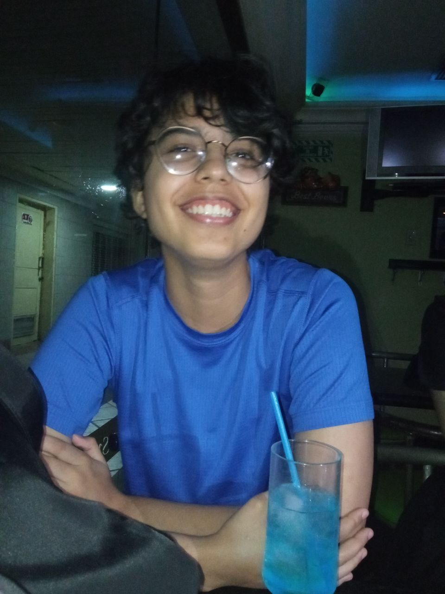

Aodán nació el 01 de enero de 2002, una fecha peculiar para un chico peculiar. Lugar de nacimiento, Venezuela, Zulia. Desde pequeño se la pasaba solo, un día se lo podía pasar completo leyendo cualquier libro que se consiguiera y al otro imaginando aventuras y escapándose de la casa (no joking). En la adolescencia descubrió su amor por los instrumentos, la poesía, la lectura y el dibujo. En el 2018 escribió uno de sus primeros libros públicos, Poesías de un joven aventurero".
Mismo año comenzó sus estudios de ingeniería en mantenimiento mecánico, comenzó clases de cuatro venezolano e hizo sus primeras canciones. 2019 comienza a trabajar en internet, 2020 tuvo que pausar la universidad por cuestión pandemia y consiguió empleo en una empresa Mexicana donde fue ascendiendo poco hasta conseguir una de las áreas más importantes, consiguió buena experiencia en administración siendo su fuerte la gestión de proyectos.
2022 después de haberse convertido en un total fanático del dinero decide dejar sus tres empleos y centrarse en la programación siendo esta página su segunda web, retoma la escritura con su nuevo libro "Menos joven, menos prosa"; Hasta aquí llega la historia que ya ha sido escrita, vendrán cosas grandes porque Aodán es el tipo de persona como aquellas que controlan el mundo.
Foto en el bar Spirit un día de Geek Fest y sushi, de los días preferidos de Aodán
Esta página fue hecha un Octubre del año 2022 con fines de estudio, es probable que no vuelva a ser actualizada y cambie de dominio.